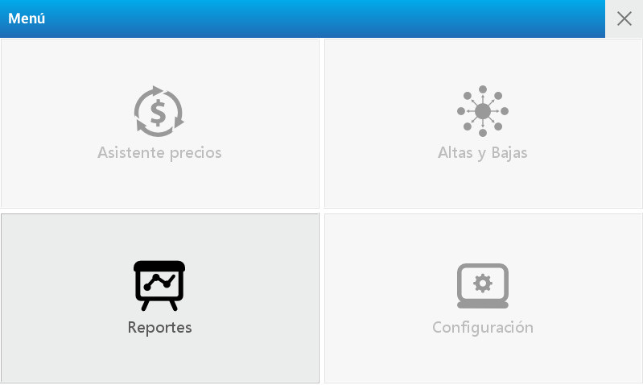
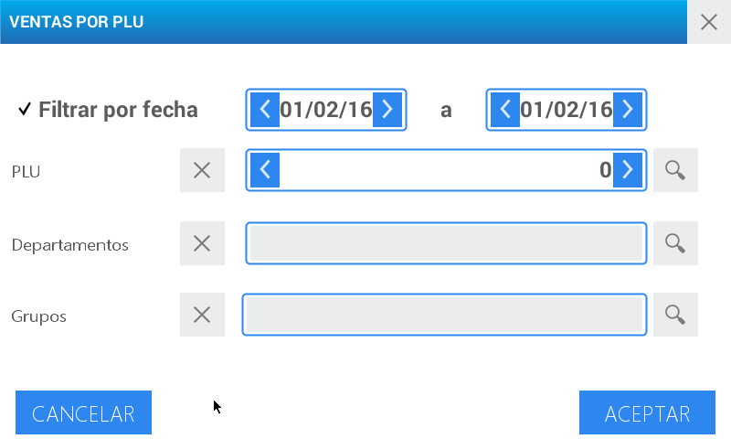
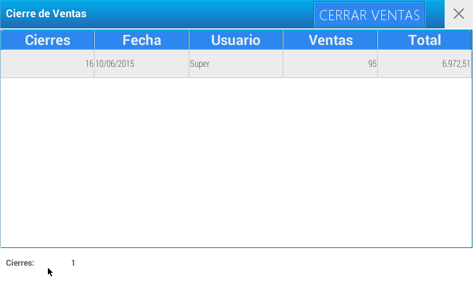
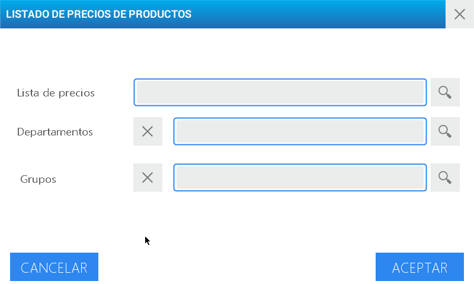

Reportes
Permiten imprimir, en papel continuo, el total de ventas por día, artículo o vendedor, así como el listado de grupos, departamentos y precios.


| Reporte | Detalle |
|---|---|
| Ventas por día | Total de ventas ejecutadas |
| Ventas por vendedor | Suma de ventas realizadas por cada VENDEDOR junto con las de PRE-EMPAQUE. |
| Ventas por PLU | Integral de ventas de cada PLU |
| Cierre de ventas | Borra de la memoria los totales de ventas |
| Listado de grupos | Detalle de los grupos generados |
| Listado de departamentos | Descripción de los departamentos activos |
| Lista de precios | Listado de precios en uso |
| Precios de PLU | Valor de un PLU en cada listado de precios o condición |
Ventas por día
Esta opción permite obtener el detalle del total de ventas concretadas de acuerdo al período seleccionado.
Ingrese al menú presionando la tecla
Seleccione usuario y digite la contraseña correspondiente.
Presione Aceptar
Elija la opción Reportes ubicada en el cuadrante inferior izquierdo de la pantalla
En la pantalla se visualiza el menú completo de este módulo. Presione Ventas por Día
Una vez ubicado en dicho apartado utilice los filtros para diseñar el reporte a su necesidad
Active el tipo de filtro a utilizar y/o el Modo Detallado presionando los cuadros grises que se encuentran al inicio de cada opción. Una vez realizada esta operación se visualiza un tilde en cada espacio.
Para emplear el filtro por fecha seleccione el período deseado utilizando los campos de fecha-hora habilitados para tal fin.
Para realizar el reporte por vendedor utilice el menú de búsqueda para seleccionar el usuario a verificar
El modo detallado le permite contar con información ampliada de las ventas ejecutadas en el período elegido:
- Fecha
- Nº Ticket
- Subtotal
Presione Aceptar
Ventas por vendedor
Este acceso muestra el total de ventas realizadas por cada VENDEDOR junto con las de PRE-EMPAQUE.

Para hacer uso de este reporte, seleccione el módulo Ventas por vendedor y continúe con los pasos que se detallan a continuación:
Active el tipo de filtro a utilizar y/o el Modo Detallado presionando los cuadros grises que se encuentran al inicio de cada opción. Una vez realizada esta operación se visualiza un tilde en cada espacio
Seleccione el período deseado utilizando los campos de fecha-hora habilitados para tal fin.
Para realizar el reporte por vendedor utilice el menú de búsqueda para seleccionar el usuario a verificar
El modo detallado le permite contar con información ampliada de las ventas ejecutadas por el vendedor seleccionado en el período elegido:
- Fecha
- Nº Ticket
- Subtotal
Presione Aceptar
Ventas por PLU
Este parámetro permite observar el total de ventas de cada PLU generado en la balanza.

Para ejecutar el reporte de ventas por PLU, seleccione el módulo Ventas por PLU y continúe con los pasos que se detallan a continuación:
Seleccione el período deseado utilizando el campo Filtrar por fecha habilitado para tal fin
El campo PLU le permite obtener el detalle de las ventas de un producto en particular. Para ello active el menú de búsqueda y seleccione el PLU a analizar.
Los campos de Departamentos y Grupos le permiten especificar aún más el reporte. Utilice el menú de búsqueda para seleccionarlos.
Presione Aceptar.
Cierre de ventas
En este punto es posible, una vez elaborados los reportes necesarios, BORRAR DE LA MEMORIA los totales de ventas realizadas con el fin de comenzar con un nuevo período.

Para eliminar de la memoria del equipo los totales de ventas realizados ingrese al módulo Cierre de Ventas y presione Cerrar Ventas ubicado en el margen superior derecho.
Luego de realizar esta acción, aparece en pantalla un mensaje para confirmar o cancelar la operación.
Listado de grupos
Permite obtener una impresión directa del listado de grupos disponibles
Para obtener el detalle de los grupos creados presione sobre el acceso Listado de Grupos y se imprimirá automáticamente dicho reporte.
Listado de departamentos:
Esta opción imprime el listado de departamentos cargados Puede obtener el inventario de departamentos generados en la balanza presionando sobre el acceso Listado de Departamentos.
Luego se imprimirá automáticamente dicho listado.
Lista de precios
De manera rápida y sencilla imprime la lista de precios activa.

Para obtener el detalle de las ventas realizadas dentro de una lista de precios, seleccione el módulo Lista de Precios y continúe con los pasos que se detallan a continuación:
Seleccione la Lista de Precios que desea verificar. Para ello utilice el menú de búsqueda.
Los campos de Departamentos y Grupos le permiten especificar aún más el listado a visualizar. Active el menú de búsqueda para seleccionarlos.
Presione Aceptar.
Precios de PLU
Seleccione este reporte cuando necesite contar con una impresión detallada del valor de un PLU en cada listado de precios o condición.

Para utilizar este reporte siga estos pasos:
Ingrese al módulo Precios de PLU
Coloque el número de PLU a visualizar o utilice el menú de búsqueda para localizarlo.
Presione Aceptar.